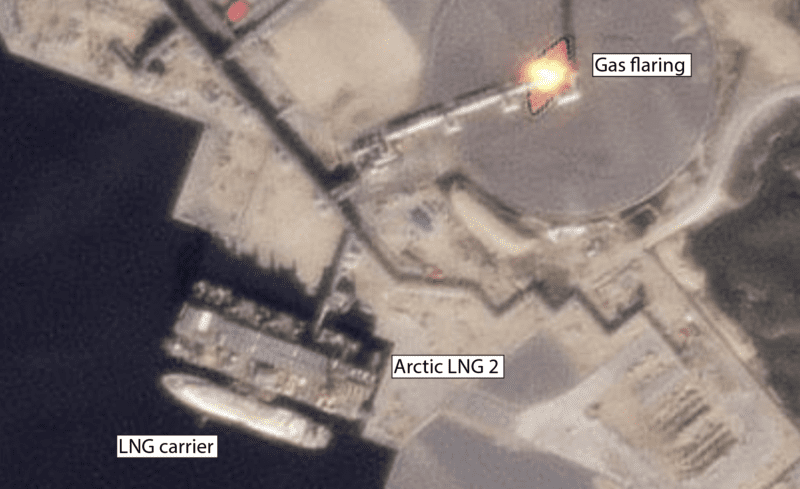

Dark LNG and Russia’s Ghost Fleet
A Visual Narrative Deep Dive into how Russian affiliated LNG Vessels Spoofed and Loaded Sanctioned Cargoes.
By Leslie Palti-Guzman & Vivek Patil
For years, the world has kept a close watch on Russia's shadow fleet of 600 oil tankers, vessels that have deftly navigated sanctions and continued to deliver crude to willing buyers in defiance of international regulations. Now in the shadowy corners of global maritime trade, a new phenomenon is emerging: the rise of the “dark LNG” fleet. Much like the shadow fleet that has reshaped the oil industry in recent years, this covert network is now making its mark in the liquefied natural gas (LNG) sector.
These are the Automatic Identification System (AIS) signals reported by 19 year old Pioneer from 15th July to 6th August 2024 —a vessel built in 2005, with a capacity of 138,000 cubic meters of LNG. Formerly known as Pioneer Spirit, this ship recently changed its flag from Singapore to Palau in April 2024. Chartered by Russia’s largest LNG producer, Novatek, the Pioneer’s journey has become a focal point in the beginning of dark LNG trade.
But, over 800 miles away, on August 1, 2024, the Pioneer (IMO 9256602) was spotted docked at the sanctioned Arctic LNG 2 plant, and it remained there through the weekend. Despite its AIS signals suggesting otherwise, the tanker had arrived at the Arctic LNG 2 terminal after what appeared to be a well coordinated spoofing operation as detected by SynMax Theia. By August 25, the Pioneer was still berthed at the terminal, presumably loading its cargo from ALNG Plant train 1.
Another vessel, the Asya Energy (IMO 9216298), tells a similar tale. This LNG carrier, built in 2002 with a capacity of 137,231 cubic meters, also switched flags from Liberia to Palau in May 2024. Formerly known as Trader IV, the ship has changed hands twice in recent years. In September 2023, Capital Gas purchased the carrier from Bonny Gas Transport for $35 million, renaming it LNG Rivers. However, just months later, in May 2024, the vessel was sold to an undisclosed Asian buyer, as reported by Tradewinds.
On August 10, 2024, satellite imagery revealed the moss type spherical vessel Asya Energy quietly docked at the Arctic LNG 2 plant. According to its reported AIS data, the vessel should have been over (800 miles) 1,000 nautical miles away near Murmansk. The vessel spoofed its location using false signals to mask its true whereabouts."
.png)
As reported by gCaptain, “As Russia is developing a full-fledged fleet of dark vessels its spoofing operation is already becoming more sophisticated. While Pioneer displayed a highly symmetrical fake AIS signature, Asya Energy’s spoofed track appears much more realistic.
It was the Pioneer’s unrealistic geometrical track that initially led industry experts to suspect it may be transmitting a false signal.” This raises a critical question: What makes LNG vessels "dark"? It’s the deliberate hiding and spoofing, not just their association with sanctioned projects, that casts them into the shadows.
Asya Energy’s journey took a pivotal turn as it navigated the shifting currents of the global LNG trade. In February 2024, under its former name Trader IV, the vessel was reportedly deployed on a short-term charter to the German trader RWE according to industry publication cygnus. Until 2023, it had been a familiar sight in the LNG corridors between Nigeria, Spain, and France, reliably transporting cargoes from Nigeria LNG to Europe. However, the vessel's trajectory changed dramatically when it was sold to UAE-based Nur Global Management in December 2023. After delivering a cargo to Mundra, India, the Asya Energy entered a cycle of voyages between the UAE and Oman. In mid-June 2024, the Asya Energy picked up a cargo from Duqm, Oman, and set off on a significant journey, was was detected doing a ship to ship transfer with the bunkering tanker Margherita Cosulich (IMO 982505), as detected by SynMax Theia satellite imagery.
The Asya Energy became the first LNG tanker in months and in 2024 to cross the Red Sea, a region fraught with geopolitical risks. On June 17, 2024, SynMax Leviaton detected the vessel heading towards the Bab-el-Mandeb Strait, one of the world’s most strategic—and dangerous—shipping lanes. Recent drone attacks by the Houthis had heightened these risks, with one such strike killing a crew member aboard a bulk carrier just days before the Asya Energy’s passage. Navigating this treacherous route might have been a calculated risk, potentially testing the waters for future voyages. As the Asya Energy traversed the Bab-el-Mandeb Strait, its movements were closely monitored by industry experts.
The vessel continued its journey towards the Suez Canal, a critical juncture in global shipping. Near Port Said, Asya Energy engaged in another ship-to-ship transfer, this time with the oil products tanker Vemahope (IMO 9477751). This transfer, captured in satellite imagery, highlighted the ongoing practice of clandestine transfers in the region, often accompanied by GPS jamming to obscure the true nature of these voyages. From July 8 to 24, 2024, Asya Energy lingered in the waters near Tangier and Gibraltar, a pattern observed among several vessels linked to the same management company which operates this vessel, suggesting a coordinated effort, with ships pausing in this particular location before proceeding to their ultimate destination: the Arctic LNG 2 plant.
The Asya Energy’s journey is not an isolated incident. A similar pattern is seen with another vessel, the Everest Energy (IMO 9323456), formerly known as Meatgas Everest. Built in 2003 and now sailing under the Liberian flag, was charterers in early 2024, and this tanker became the second ship to cross the Red Sea, following in the Asya Energy’s route. After sailing ballast, it was stationed near Port Said, where it rendezvoused with another LNG carrier, New Energy (formerly Neo Energy) also owned and managed by the same company . These movements are not random. They signify the emergence of a new shadow fleet, orchestrated and managed by little-known entities. The five vessels, including Mulan (IMO 9234567), formerly Mulan Spirit, are now part of a coordinated effort to transport sanctioned LNG from Russia’s Arctic LNG 2 plant. These ships, all managed by a single-person company based in India, are registered under a Liberia-based entity as reported by Energy Intelligence and according to equasis database, Ocean Star Speed Star Management, now at the center of a rapidly growing dark LNG trade network. registered 150 km from the city of mumbai in June 2024, as reported by Bloomberg. (attach photo of the address if needed). Bloomberg, “ Until June, the ship was briefly managed by Nur Global Shipping, another little known company that operates out of the Meydan Hotel, in a United Arab Emirates free trade zone that has been criticized by officials for its lack of transparency. The use of unheard-of companies is similar to Moscow’s maneuver to create the shadow fleet of oil tankers.”
As Russia’s Arctic LNG 2 project was sanctioned by the US in november 2023 , with a capacity of 6.6 million tonnes per annum (mtpa), comes online, the challenge of navigating international sanctions looms large. The LNG produced here may change hands multiple times, passing through various intermediaries before reaching its final destination. Industry speculation suggests that the likely buyers of this sanctioned gas is China, nations with the economic clout and strategic interests to defy Western sanctions. Bloomberg, “The US imposed sanctions on the Arctic LNG 2 plant in November to prevent the start of exports. While the facility began production in December, no fuel has so far been shipped as restrictions kept foreign companies away and stopped delivery of specialized, ice-ready carriers.” The Novelty of the Dark Fleet The "dark LNG" fleet is being built from the ground up, with Russia leveraging its connections with key allies like China and India to construct a network of vessels capable of operating in the shadows. These ships are not only designed to evade sanctions but are also equipped with advanced technology to spoof, hide, and manipulate their AIS signals. This makes them nearly invisible to traditional tracking methods, allowing them to slip through the cracks of global surveillance. However, the future of this shadow fleet remains uncertain. The risks are high, not just for the ships and their crews, but for the global LNG market as a whole. As these vessels continue their clandestine operations, the industry watches closely, wondering whether this new chapter in dark LNG will reshape the energy landscape—or lead to unforeseen consequences.